16 позиций на Озоне, примерно 61 000 ₽. У каждой — снимок карточки из поиска, чтобы узнать товар с первого взгляда, и кнопка «Найти» с готовым запросом. Отмеченное сохраняется.
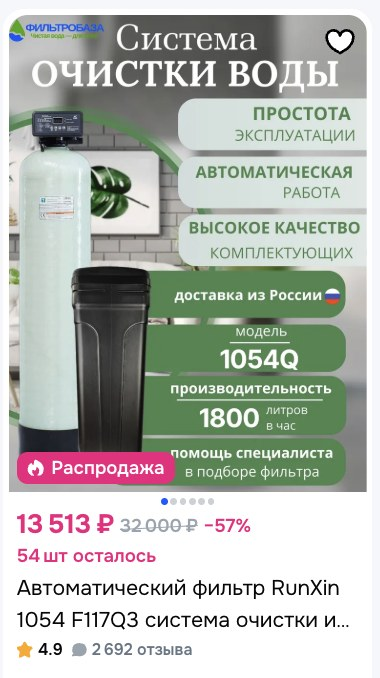
Колонна умягчителя1 шт
Обязательно: размер 1054, клапан автоматический (не ручной), в комплекте солевой бак и дистрибьютор — трубка с «грибком» внутрь баллона. Подходят RunXin, Гейзер, Frotec.
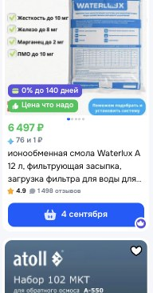
Загрузка Waterlux A37 л
Комплексная загрузка от жёсткости и марганца. Кроме Waterlux подойдут Ecomix A и похожие — главное, чтобы в характеристиках стояло: марганец до 2 мг/л и жёсткость от 15 мг-экв/л (у нас 10,5, нужен запас). Нужно ровно 37 литров — это мешок 25 л плюс мешок 12 л. Больше засыпать нельзя: загрузке нужно место, чтобы расширяться при промывке.
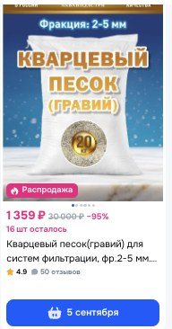
Кварц-подложка10 кг
Обязательно фракция 2–5 мм. Засыпается на дно колонны под загрузку.
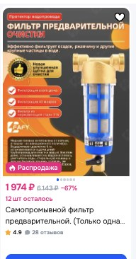
Фильтр грубой очистки1 шт
Обязательно: самопромывной, резьба 1 дюйм, сетка 100 мкм, корпус латунный. Не путать со сменными сетками по 150–400 ₽ — нам нужен фильтр целиком.
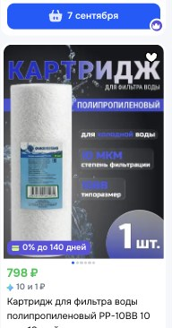
Корпус фильтра 10BB1 шт
Типоразмер 10BB (он же Big Blue, Джамбо), для холодной воды, вход 1 дюйм. В комплекте должны быть кронштейн и ключ для откручивания колбы.
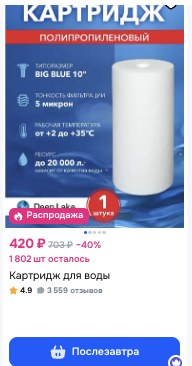
Картридж к корпусу1 шт
Полипропиленовый, типоразмер 10BB (не 10SL — он тоньше и не влезет), тонкость 5 мкм.
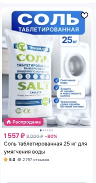
Соль таблетированная2 мешка
Именно для водоочистки (не для посудомоечной машины), мешок 25 кг. Марка любая: Rockmelt, Тульская, Мозырьсоль — состав одинаковый.
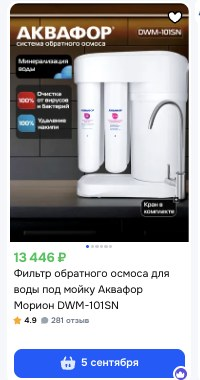
Фильтр обратного осмоса1 шт
Ставится за час и сразу закрывает главное — марганец в питьевой воде, он вчетверо выше нормы. Аквафор Морион DWM-101SN, строго с буквой N на конце: эта версия возвращает в воду кальций и магний. Без N дешевле, но вода будет пустая.
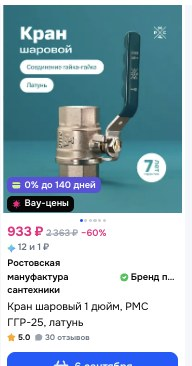
Кран шаровой3 шт
Резьба 1 дюйм, корпус латунь. Три штуки: на вход, на выход и на обвод.
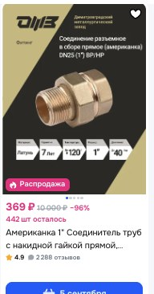
Американка4 шт
Разъёмное соединение, резьба 1 дюйм, латунь. Нужны, чтобы снять колонну не разрезая трубы.
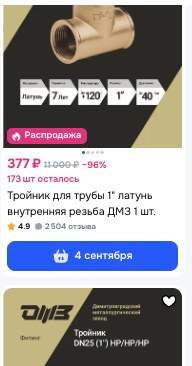
Тройник2 шт
Равнопроходной 1×1×1 дюйм, внутренняя резьба, латунь. Не переходной — все три выхода одного размера.
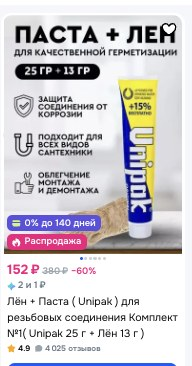
Лён и паста1 набор
Комплект Unipak: паста 25 г + лён 13 г. Для уплотнения резьбы, безопасна для питьевой воды.
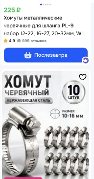
Хомуты червячные1 уп
Размер 16–27 мм, нержавейка, упаковка 5–10 штук. Для крепления сливного шланга.
Шланг для сливапо месту
С клапаном идёт шланг около метра. Померьте расстояние от колонны до сливной ямы — если дальше, возьмите армированный шланг 1/2 дюйма нужной длины. Если метра хватает, позицию пропустите.
Тест-полоски на жёсткость1 набор
Чтобы раз в месяц проверять, что система работает. Если жёсткость на выходе поползла вверх — загрузка выработалась или регенерация не отрабатывает. Мерить нужно на выходе из системы, а не на входе — на входе вода зашкалит за шкалу. Ищите набор 50 штук.
Переходники под вашу трубупо факту
Всё выше рассчитано на резьбу 1 дюйм. Но магистраль в доме из какой-то трубы — и её надо к этой резьбе привести. Посмотрите, что у вас в котельной: ПНД (чёрная с синей полосой), полипропилен (белая паяная) или металлопласт. Под неё нужны муфты с наружной резьбой 1 дюйм, 4 штуки. Проще купить в сантехническом на месте, показав трубу.
Эта часть для Юрия и монтажника. Юле при заказе она не нужна.
Колонна ставится в обход из двух тройников и крана: закрыли два крана, открыли обводной — вода идёт мимо, колонну можно снять не останавливая дом. Осмос врезается отдельно, под кухонной мойкой.
| Соль — регенерация раз в 5 дней, 4–5 кг за раз | 1 200 – 1 700 ₽ / мес |
| Картриджи осмоса | ≈ 4 500 ₽ / год |
| Картридж 10BB | ≈ 500 ₽ / полгода |
| Замена загрузки | раз в 5–8 лет |
| В яму: промывка колонны | +1,4 м³ / мес |
| В яму: дренаж осмоса | +0,9 – 1,2 м³ / мес |
Сдать в лабораторию один показатель — марганец (около 1 400 ₽). Это подтвердит, что загрузка действительно его снимает, а не только жёсткость. Заодно проверить жёсткость тест-полосками: на выходе должно быть 3,5–4 °Ж.